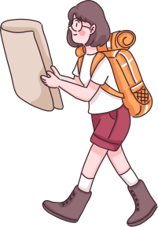

We are exploring ways to reclaim childhood & reconnect with nature. We'd love to bring you along.
About us
Our aim is to be intentional about nature time, and to balance out pervasive screen culture. Nature is a solution to many modern problems and can help children to develop in a whole self way. Dads have a pivotal, not optional, role here to play. Only need to show up for our world for generations to come.
How it started
Couchland Kingdom
Once upon a time, in a kingdom of Couchland, parents and kids were trapped in a world of screens and schedules. Only rediscovering the rituals of the outdoors can break the spell. A father and his daughter stepped out armed with arrows of curiosity and initiative.
Gate of Small Steps
The duo reached the Gate of Small Steps. Guarded by the myth that outdoor adventures must be perfect, way beyond looked dim and hazy. But they discovered the key of joy and connection which unlocked the door head.
Forest of Doubts
As they hiked through the Forest of Doubts, they encountered whispers of worry: 'What if it’s too hard?' 'What if I fail?'. Father looked in the bag of items given by villagers before leaving for the journey. He pulled the torch of shared stories and worries faded like morning mist.
Campfire of Connection
At night, sitting by the campfire, he wrote in the sand below, 'It doesn't need to be perfect, just be there,' while looking at the child's face and the stars above.
Valley of Community
In the morning, they halted at the Valley of Community, a vibrant hub where families gathered to exchange stories of raising children. Laughter and joy filled the air as parents shared their triumphs and challenges. Everyone was happy to be back, free from the spell's grip.
The Panacea
Desperate to learn how to break the curse, they pleaded for the spellbreaker. Each voice echoed the same question – 'What is the panacea?' The father smiled, a knowing glint in his eyes. He raised a sprig of cedar leaves aloft.'Nature,' he declared.
52 Wild Weekends
What
WWC is a fun challenge for parents, caregivers, and anyone who wants to reconnect with nature, strengthen family bonds, and slow down.
Goal
Utilise all 52 weekends in a year to strike a balance between your screen time and nature time, and spend time with loved ones.
Why
By finding the magic in the ordinary, we truly connect with family, with our kids, and with ourselves.
The Open Letter
Dear Readers,
In our fast-paced world, it’s easy to forget the simple pleasures of childhood and the enchanting magic of nature. But imagine a life where weekends aren’t just a break from routine—they’re a portal to endless adventures, personal growth, and deep connections.
We’re thrilled to invite you to join us on an extraordinary journey: the 52 Wild Weekends Challenge. This isn’t just a challenge; it’s a call to reclaim the wonder of childhood and rediscover the healing power of nature, one weekend at a time.
The idea is simple: each weekend of the year, let’s step outside, explore the great outdoors, and create unforgettable memories. Whether it’s hiking through a lush forest, camping under the starlit sky, or simply having a picnic in a local park, these moments can transform how we experience life—with wonder, courage, and joy.
This challenge isn’t just for kids. It’s for parents, caregivers, and anyone who wants to reconnect with nature, strengthen family bonds, and slow down. You’ll find that these weekends won’t just change your perspective—they’ll transform the way you live and connect with your loved ones.
Each week, we’ll share inspiration, tips, and stories to guide your wild weekend adventures. Together, we’ll create a movement of people stepping away from the ordinary and embracing the extraordinary.
So, are you ready to say yes to 52 weekends of discovery, laughter, and wild adventures? Let’s embark on this incredible journey together and make every weekend count.
Here’s to reclaiming childhood and reconnecting with nature—one wild weekend at a time.
Step Out with hope and Follow us on:
Picks to read